紋理¶
這允許你使用有紋理的筆觸。有兩個可勾選的參數頁面（圖案和效果強度）：
紋理¶
- 圖案
選擇筆刷使用的圖案。
- 縮放
圖案的縮放比例，1.0 為 100%。

- 水平和垂直偏移
筆刷的偏移量，每筆畫皆是新的隨機偏移量。

- 紋理模式
所有紋理模式都會影響透明度通道，只有亮度映射和漸變映射例外，它們影響顏色通道。
 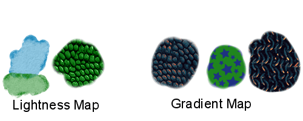
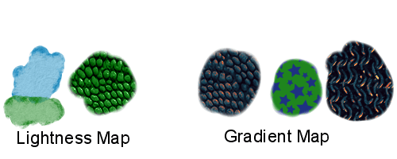
下圖說明中，示例筆畫從左側的低強度到右側的高強度繪制 。上圖使用硬筆尖，下圖使用軟筆尖。在筆畫的左側有兩個無紋理的點，僅供比較。
- 色彩增值（相乘）
對透明度進行相乘計算來決定紋理的效果。具有柔和的感覺。
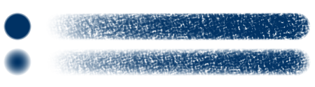- 減去
使用減法來決定紋理的效果。具有更粗糙、更質感的感覺。
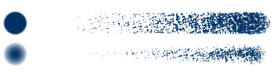- 亮度映射
在 4.4 版本新加入.
紋理影像的亮度值將影響筆畫顏色的亮度值。它可以用來模擬包括紙張、畫布，或用於如爬行動物皮膚或樹皮等繪製紋理的效果。
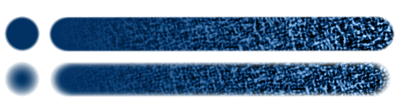- 漸變映射
在 4.4 版本新加入.
將紋理的灰階或者亮度值映射到當前選定的漸變。用於繪製多種顏色的紋理，如爬行動物的皮膚、樹皮、星星等。
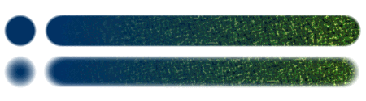- 變暗
在 5.0 版本新加入.
此模式會在筆尖和紋理之間選擇透明度最小的值。其效果彷彿在筆尖的不透明區域打孔一樣。
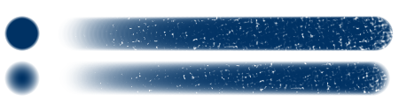- 覆蓋
在 5.0 版本新加入.
紋理會被柔和應用到筆尖的半透明區域。此模式類似於色彩增值的效果，但能夠在效果強度較高時填滿筆畫的全部區域。
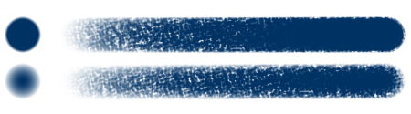- 加亮色彩（減淡）
在 5.0 版本新加入.
此模式通過在紋理值更亮的地方使其更不透明，而在筆尖上產生帶有一些硬邊的特徵。
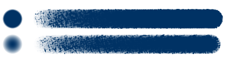- 加深
在 5.0 版本新加入.
此模式通過在紋理值較暗的地方使其更透明，從而在筆尖上產生邊緣較硬的孔。
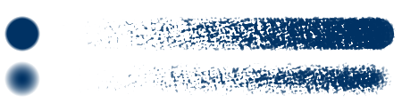- 線性加亮（減淡）
在 5.0 版本新加入.
類似於加亮色彩，但筆尖的不透明度進一步提高。
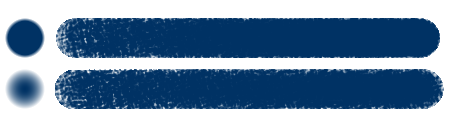- 線性加深
在 5.0 版本新加入.
效果類似於加深模式，但不透明度進一步降低。它的效果也類似於紋理顏色反相後的減去模式。
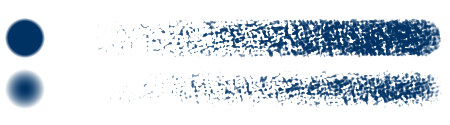- 實色混合 (Photoshop)
在 5.0 版本新加入.
此模式的效果類似於 加深 和 線性加深 ，且在效果強度數值較高時能完全填滿筆尖。它的筆畫邊緣較硬（實際上是鋸齒狀的）。
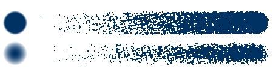- 實色混合 - 更柔和 (Photoshop)
在 5.0 版本新加入.
此模式嘗試模擬實色混合 (Photoshop)，同時產生更柔和、抗鋸齒的邊緣。
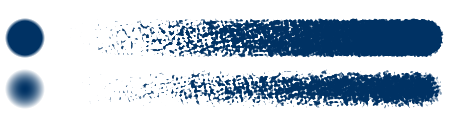- 高度
在 5.0 版本新加入.
此模式類似於減去模式，但效果強度數值導致的筆尖變化范圍更加豐富。與減去模式不同，它單筆即可達到完全填滿筆尖的效果。
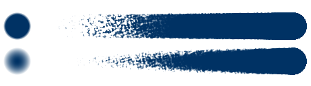- 線性高度
在 5.0 版本新加入.
與高度模式相同，但結合了色彩增值模式的特性以實現更柔和的過渡。
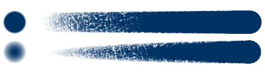- 高度 (Photoshop)
在 5.0 版本新加入.
與高度模式一樣，此模式類似於減去模式，但應用效果強度數值時筆尖的變化範圍更加豐富。與減去模式不同的是它單筆即可達到完全填滿筆尖的效果。此模式嘗試模仿 Photoshop 中的高度模式，它與 Krita 原生的高度模式的區別在於演算法中的映射效果強度。當效果強度數值為 0.1 時，其效果基本與減去模式下效果強度數值為 1 時相同。
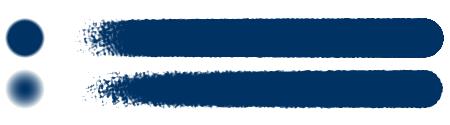- 線性高度 (Photoshop)
在 5.0 版本新加入.
與高度 (Photoshop)相同，但結合色彩增值以實現更柔和的過渡。
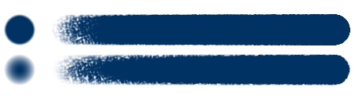
- 截斷策略
截斷策略將確定強度效果在什麼範圍、位置影響紋理結果。
- 禁用
不進行截斷，將使用完整的範圍。
- 圖案
依圖案的深淺範圍進行截斷。
- 筆刷
對筆尖的不透明度范圍進行截斷。

- 截斷範圍
截斷範圍是限制紋理使用的灰階範圍，同時還控制效果強度的輸入範圍。在下方的第一行的第一張圖中，我們把右邊的白色三角拖動到左邊的黑色三角附近，所以只有明度最暗的部分被繪制了出來。接下來的三張圖片的範圍更寬一些。第二行的前面三張圖的黑色三角被向右拖動，所以明度最暗的部分被忽略了，之後明度較亮的部分被繪制了出來。最後一張圖並未使用截斷功能。

- 圖案反轉
反轉圖案。

亮度和對比度
在 3.3.1 版本新加入: 使用簡單的亮度／對比度過濾器調整圖案，使其更易於使用。因為減去和色彩增值的工作方式不同，所以建議為它們使用不同的數值：

在 4.4 版本新加入: 中性點調整：
- 中性點
調整被視作中性點的灰階值的位置。0.5 將保持原圖紋理不變。調高會讓紋理變暗，調低會讓紋理變亮，與亮度映射模式下的效果略有不同。它主要用來配合亮度映射和漸變映射模式使用，對紋理圖像的效果進行微調（儘管它可以具有其他兩種模式的應用）。
效果強度¶
此項控制感測器對紋理的影響。它會使用截止值使其連續繪制的區域深淺保持一致（只在力度增大時加深顏色）。
在 4.4 版本新加入: 在亮度映射和漸變映射模式下，強度滑動條用於控制應用多少紋理與多少選定的前景色通過。